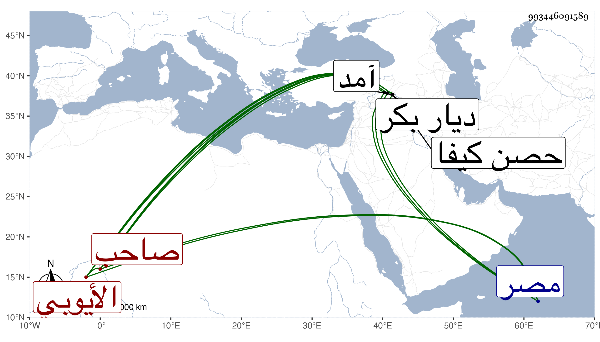

0902Sakhawi.DawLamic.ITO20230111-ara1.EIS1600.993446091589
Biography ID: 993446091589
خلف بن محمد بن سليمان بن أحمد الأيوبي العادل صاحب حصن كيفا . وثب على ابن عمه وابن أخته الكامل أحمد بن خليل الماضي ليلا ومعه أربعون رجلا بحيث فر الكامل إلى قلعة أو غيث من معاملة الحصن ودام في المملكة سبع سنين إلى أن هجم عليه زين العابدين وأيوب وعند الرحمن بنو عمه على بن محمود ابن العادل سليمان فقتلوه في الحمام وبادروا مسرعين لولده هرون وهو بالديوان فقتلوه وملكوا أولهم ولقب بالصالح فلم تنقض السنة حتى انتزعه منهم لاختلافهم الأمير حسن بك بن على بك بن قرايلوك عثمان صاحب آمد في ذي القعدة سنة ست وستين وقتلهم صبرا بين يديه ، وهذا ابن بضع وخمسين سنة ، بل استولى حسن بك على عدة قلاع من ديار بكر وانقطعت بذلك مملكة بنى أيوب للحصن وكانوا ملوكها من أول ملك بنى أيوب لمصر فسبحان الفعال لما يريد ، وكان العادل بطلا شجاعا مقداما ذا بطش وقوة وله نظم ليس بذاك وإليه الإشارة بقول الصدر ابن البارزي مما كتب به إليه صدر كتاب :
| قالوا بموت الكامل الحصن وهت | وعزها قد حاد عنها وصدف |
| فقلت إن كان مضى كاملها | فإن فيها خلفا عن من سلف |
